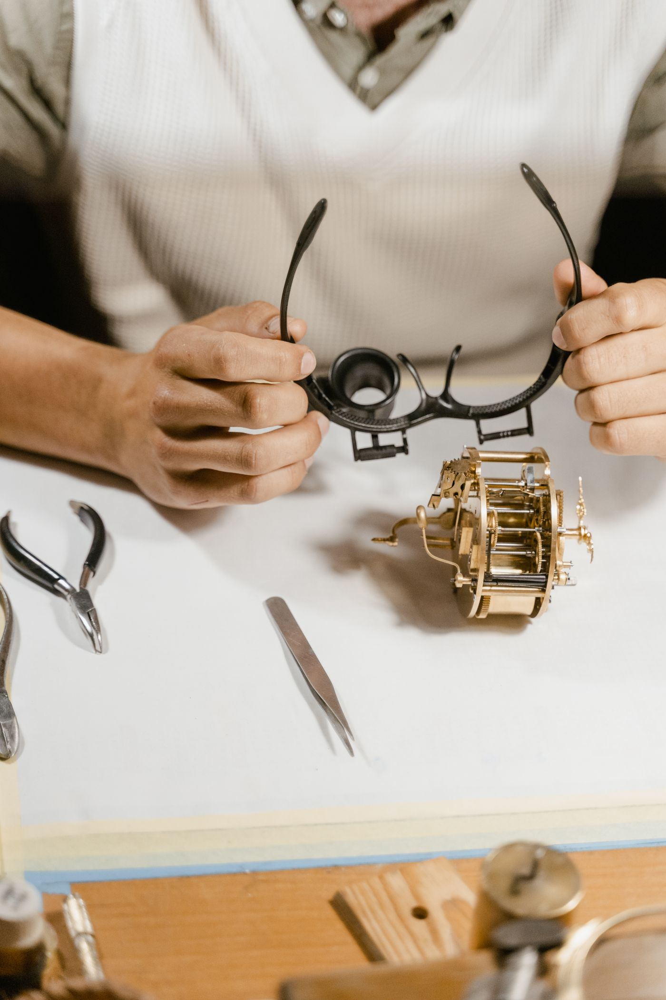
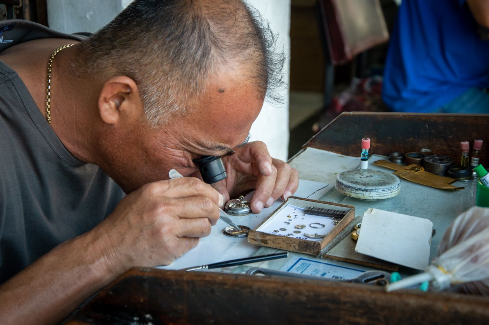

Services at Hayes Jewelers
Family-owned jewelry in Mobile since 1976
Custom design
The jewelry of your dreams, from your gold or theirs, and your gemstones or theirs.
Diamonds
Diamonds in all shapes, sizes, and quality.
Precious colored gemstones
Precious colored gemstones in all shapes, sizes, and quality.
Jewelry repair
Repairs by trained professionals, including vintage costume jewelry.
Watch repair
Watch repair and restoration for all name brands, including Rolex, by graduates of Bishop State College.
Eyeglass-frame repair
Repair for damaged eyeglass frames.
Appraisals
Appraisals of fine jewelry for insurance or estate purposes.
Gift cards
Gift cards for any occasion.
Brands carried
Citizen and G-Shock watches.
Gallery



All gallery photos are stock photos, labeled as such. They show the kind of work and setting described on this page, not this business.
Contact
Hayes Jewelers serves Mobile. Questions? Call +1 251-661-9846.